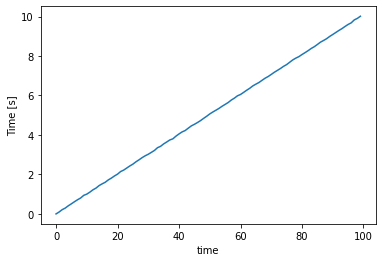
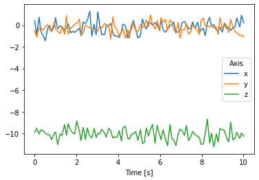
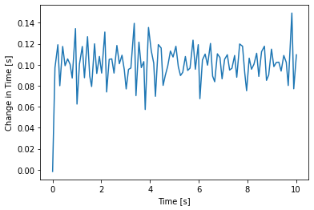
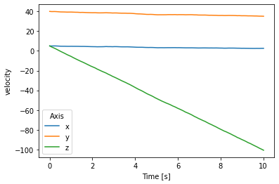
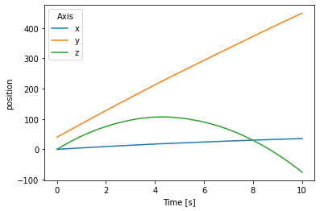
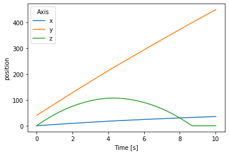
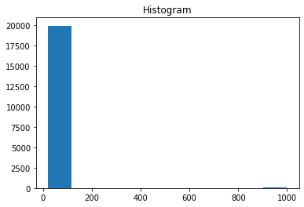
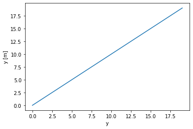

xarray for computations¶
First of all, `xarray <http://xarray.pydata.org/en/stable/index.html>`__ is a wonderful tool for creating - and interacting with - labeled multidimensional data. I turn to xarray any time I have multidimensional data.
If you’re familiar with `pandas <https://pandas.pydata.org/>`__, then you’ve probably grown to love its API, and you have more than likely grown so used to having labeled data. I bet that, like me, when you see unlabeled data, like raw ``numpy`` arrays, your heart stops for a little.
The purpose of this tutorial is to (hopefully) show you that performing computations using xarray is easy. Using `xarray data structures <http://xarray.pydata.org/en/stable/data-structures.html>`__ makes your multidimensional computations much more expressive, easier to understand, and easier to develop!
Defining the problem¶
Imagine we’re working on a modeling and simulation project where we want to model the path of a projectile in 3D over time. Simple enough, right. Once we get the basics of this working, we’ll add more complex things.
For example, later on we might want to investigate
the effects of the projectile on the surrounding air temperature
the effects of wind on the projectile’s path
etc.
Setting up the solution¶
This is a modeling and simulation project. So, our first step is to simulate some real world data.
So far, we know that we want to model a projectile’s path over time, so we know that we’ll have to create some time data. But what else will we have to create?
Imagine that our projectile has some sensors on board. For now, imagine that it has an accelerometer that informs us of its x- y- and z-acceleration over time. So we’ll create some acceleration data as well.
We can add more later. Let’s keep things simple for now.
[1]:
import numpy as np
import xarray as xr
import matplotlib.pyplot as plt
Time¶
Time will be stored in an `xarray.DataArray <http://xarray.pydata.org/en/stable/data-structures.html#dataarray>`__, not a ``numpy.ndarray``! This is because we can store so much more relevant info in an xarray.DataArray.
Let’s also add some noise to the time measurements.
[2]:
def gen_time_values():
"""Create the time values with some noise."""
time_linear, time_step = np.linspace(
0, 10, 100, retstep=True
)
time_noise = np.random.default_rng().normal(
0.0, 0.1, size=time_linear.shape
) * time_step
time_values = time_linear + time_noise
assert all(time_values == np.sort(time_values))
return time_values
time = xr.DataArray(
gen_time_values(),
dims=("time"),
attrs={
"units":"s",
"long_name":"Time"
},
)
time.plot()
plt.show()

X- Y- and Z- axes¶
We are dealing with 3D coordinates. It may seem trivial to define this data structure, but believe me, it makes things much more expressive and clear.
[3]:
axis = xr.DataArray(
["x", "y", "z"],
dims=("axis"),
attrs={
"long_name":"Axis"
}
)
axis
[3]:
<xarray.DataArray (axis: 3)>
array(['x', 'y', 'z'], dtype='<U1')
Dimensions without coordinates: axis
Attributes:
long_name: Axis- axis: 3
- 'x' 'y' 'z'
array(['x', 'y', 'z'], dtype='<U1')
- long_name :
- Axis
Acceleration¶
This simulation takes place on the Earth, so we have to take gravity into account. Let’s say that gravity acts in the z-direction. Let us assume, for now, that acceleration in both the x- and y- directions is zero.
As mentioned earlier, acceleration is being recorded via onboard sensors, so there will be some noise in the recordings. Let’s go ahead and create some acceleration data with some noise.
[4]:
def gen_random_array(*, shape, noise, center):
"""Create an array with values between -0.5 and 0.5."""
offset = -0.5
center = np.array(center)
rnd_array = np.random.default_rng().normal(size=shape)
return ((rnd_array + offset) * noise) + center
acceleration = xr.DataArray(
gen_random_array(
shape=(len(time), len(axis)),
noise=0.5,
center=[0.0, 0.0, -9.81],
),
coords=[time, axis],
)
acceleration.plot(hue="axis")
plt.show()

[5]:
# see https://stackoverflow.com/a/59378218/8863304
dt = xr.DataArray(
np.diff(time, prepend=0),
coords=[time],
attrs={
"units":"s",
"long_name":"Change in Time"
},
name="delta_time"
)
dt.plot()
plt.show()

[6]:
simulation = xr.Dataset(
{
"time":time,
"axis":axis,
"acceleration":acceleration,
}
)
simulation
[6]:
<xarray.Dataset>
Dimensions: (axis: 3, time: 100)
Coordinates:
* time (time) float64 -0.001681 0.0955 0.2145 ... 9.829 9.906 10.02
* axis (axis) <U1 'x' 'y' 'z'
Data variables:
acceleration (time, axis) float64 0.3889 -0.517 -9.876 ... -1.084 -10.26- axis: 3
- time: 100
- time(time)float64-0.001681 0.0955 ... 9.906 10.02
- units :
- s
- long_name :
- Time
array([-1.681257e-03, 9.549739e-02, 2.145437e-01, 2.945371e-01, 4.119434e-01, 5.110255e-01, 6.165762e-01, 7.168910e-01, 8.042299e-01, 9.386181e-01, 1.001114e+00, 1.101717e+00, 1.219092e+00, 1.306696e+00, 1.433398e+00, 1.522680e+00, 1.601905e+00, 1.721820e+00, 1.813499e+00, 1.921397e+00, 2.013426e+00, 2.144558e+00, 2.218586e+00, 2.323651e+00, 2.429211e+00, 2.521239e+00, 2.639552e+00, 2.740498e+00, 2.849541e+00, 2.944615e+00, 3.021561e+00, 3.117117e+00, 3.213967e+00, 3.353379e+00, 3.423923e+00, 3.545441e+00, 3.642693e+00, 3.745648e+00, 3.802981e+00, 3.938459e+00, 4.051739e+00, 4.153258e+00, 4.223101e+00, 4.342273e+00, 4.458196e+00, 4.538491e+00, 4.628338e+00, 4.726835e+00, 4.839845e+00, 4.947199e+00, 5.064756e+00, 5.162944e+00, 5.252630e+00, 5.345347e+00, 5.453155e+00, 5.547694e+00, 5.644479e+00, 5.767870e+00, 5.863566e+00, 5.982665e+00, 6.050319e+00, 6.154881e+00, 6.264982e+00, 6.364544e+00, 6.484805e+00, 6.573908e+00, 6.657698e+00, 6.768079e+00, 6.874876e+00, 6.961443e+00, 7.066671e+00, 7.176193e+00, 7.271078e+00, 7.367763e+00, 7.476564e+00, 7.564631e+00, 7.684384e+00, 7.801975e+00, 7.893884e+00, 7.969111e+00, 8.075330e+00, 8.171034e+00, 8.271507e+00, 8.382420e+00, 8.471252e+00, 8.583660e+00, 8.701272e+00, 8.786371e+00, 8.876611e+00, 8.991462e+00, 9.089660e+00, 9.191864e+00, 9.294245e+00, 9.388182e+00, 9.496989e+00, 9.599243e+00, 9.679431e+00, 9.828667e+00, 9.905750e+00, 1.001519e+01]) - axis(axis)<U1'x' 'y' 'z'
- long_name :
- Axis
array(['x', 'y', 'z'], dtype='<U1')
- acceleration(time, axis)float640.3889 -0.517 ... -1.084 -10.26
array([[ 3.88869063e-01, -5.16989169e-01, -9.87557967e+00], [-8.37234874e-01, -1.10615485e+00, -9.52523955e+00], [ 7.24662581e-01, -2.12908517e-01, -1.00379424e+01], [-5.47917607e-01, -2.85473898e-01, -9.65965172e+00], [-9.94640946e-01, -4.85848485e-01, -9.76329882e+00], [-1.44742553e+00, -1.50316589e-01, -9.97525735e+00], [-3.32496885e-01, 3.59610262e-02, -1.00981484e+01], [-3.41081797e-02, -4.26477331e-01, -1.01273689e+01], [-5.97666143e-01, -5.74694673e-01, -1.05548632e+01], [-1.30019343e-01, 3.16816331e-01, -9.96715766e+00], [ 6.79737438e-01, -3.18584051e-01, -9.87473484e+00], [-3.44726015e-01, -5.94550020e-01, -1.10290187e+01], [-6.99227986e-02, -7.83301602e-01, -1.00406725e+01], [-1.36740324e-01, -1.17786760e-01, -1.01780744e+01], [-4.86430639e-01, -8.39858383e-01, -9.17348020e+00], [-2.02956539e-01, 8.70577476e-01, -1.01658845e+01], [ 1.18821967e-01, -8.45674987e-01, -9.09945084e+00], [-7.15734639e-01, -2.99311999e-01, -9.65708142e+00], [-5.81915032e-01, -1.73444721e-01, -9.93362282e+00], [-6.75382957e-01, 8.37954079e-02, -1.00456840e+01], ... [-2.78530466e-01, 6.49908220e-01, -1.09728220e+01], [-9.70619056e-01, -6.78409418e-02, -9.97590629e+00], [ 2.05582045e-01, -5.10330789e-02, -8.65923870e+00], [ 7.11199589e-01, -1.78754058e-01, -1.08810808e+01], [-1.16330824e-01, -4.03107258e-02, -9.96632168e+00], [ 4.82220497e-02, -2.48574064e-01, -1.12397552e+01], [-4.37433274e-01, -1.86972891e-01, -1.00359515e+01], [-5.88237234e-01, -8.58602416e-01, -1.07936354e+01], [-1.97028333e-01, 6.86943446e-01, -9.52507716e+00], [-6.55605579e-01, -3.65377554e-01, -9.66241671e+00], [ 1.84712419e-01, -6.98044603e-02, -9.71203213e+00], [-3.29464673e-01, 3.50636056e-02, -1.04042785e+01], [-2.22603470e-01, -6.92174921e-01, -1.07763598e+01], [-4.92486925e-01, 5.36324120e-01, -8.94025542e+00], [-2.61847846e-01, -1.89734088e-01, -1.05839734e+01], [-1.49803009e-01, -5.89535565e-01, -1.04293871e+01], [ 6.54121222e-01, -7.03617224e-01, -9.89125024e+00], [-1.73350593e-01, -9.77066715e-01, -1.04447038e+01], [ 9.15668739e-01, -9.12602874e-01, -9.95299616e+00], [ 2.11834477e-01, -1.08376909e+00, -1.02641562e+01]])
[7]:
initial_velocity = np.array([5.0, 40.0, 5.0])
simulation["velocity"] = (dt * simulation.acceleration).cumsum() + initial_velocity
simulation.velocity.plot(hue="axis")
[7]:
[<matplotlib.lines.Line2D at 0x7f91a67d73a0>,
<matplotlib.lines.Line2D at 0x7f91a67d74f0>,
<matplotlib.lines.Line2D at 0x7f91a67d7580>]

[8]:
initial_position = np.array([0.0, 40.0, 0.0])
simulation["position"] = (dt * simulation.velocity).cumsum() + initial_position
simulation.position.plot(hue="axis")
[8]:
[<matplotlib.lines.Line2D at 0x7f91a673dd60>,
<matplotlib.lines.Line2D at 0x7f91a673deb0>,
<matplotlib.lines.Line2D at 0x7f91a673df40>]

[9]:
simulation["position"] = simulation.position.where(
simulation.position >= 0.0,
0.0
)
simulation.position.plot(hue="axis")
[9]:
[<matplotlib.lines.Line2D at 0x7f91a66b3790>,
<matplotlib.lines.Line2D at 0x7f91a66b38e0>,
<matplotlib.lines.Line2D at 0x7f91a66b3970>]

Dimensions / Coordinates¶
[10]:
time_values = np.linspace(0, 10)
x_values = np.arange(0, 20)
y_values = np.arange(0, 20)
time_da = xr.DataArray(
time_values,
dims=("time"),
attrs={"units":"s"},
name="time",
)
x_da = xr.DataArray(
x_values,
dims=("x"),
attrs={"units":"m"},
name="x",
)
y_da = xr.DataArray(
y_values,
dims=("y"),
attrs={"units":"m"},
name="y",
)
[11]:
base_temperature = 20.0
temperature_values = np.zeros((
len(time_values), len(x_values), len(y_values)
))
temperature_values.fill(base_temperature)
temperature_da = xr.DataArray(
temperature_values,
coords=[time_da, x_da, y_da],
name="temperature"
)
mask = (
(temperature_da.time == 0)
& (temperature_da.x <= 5)
& (temperature_da.y <= 5)
)
initial_temperature = 1000
temperature_da = xr.where(
mask,
initial_temperature,
temperature_da
)
temperature_da.plot.hist()
[11]:
(array([19964., 0., 0., 0., 0., 0., 0., 0.,
0., 36.]),
array([ 20., 118., 216., 314., 412., 510., 608., 706., 804.,
902., 1000.]),
<BarContainer object of 10 artists>)

[12]:
y_da.plot()
[12]:
[<matplotlib.lines.Line2D at 0x7f91a659f3d0>]
